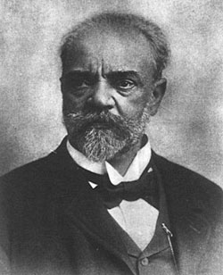

In Memoriam: Antonin Dvorak (1841 – 1904)
zaterdag 1 mei 2004 | Kultuur

Precies 100 jaar geleden voelde de 63 jarige Tsjechische componist Antonín Dvorák zich sterk genoeg om deel te nemen aan de Mei-vieringen in zijn geliefde thuisland. Hij was altijd een gezond mens geweest, maar kreeg in april van het jaar 1904 last van een hevige pijn in zijn zij, die hem nu bijna een maand aan het bed had gekluisterd. Hij stond op, ging de stad in, bestelde een bord soep en stierf.Dvorák (spreek ‘dvortzjak’) mag zonder blozen plaatsnemen tussen de allergrootsten onder de componisten die de geschiedenis heeft voortgebracht. Als zoon van een arme slager schopte hij het tot een hoge artistiek leidinggevende functie aan het National Conservatory in New York, ontving hij een doctoraat aan de universiteit van Cambridge en was erg geliefd bij veel andere componist-tijdgenoten zoals Brahms en Tchaikowsky.
Hoewel het zeker niet ‘chique’ stond in zijn tijd om als Oost-Europese componist door het leven te gaan, bleef Dvorák hondstrouw aan zijn roots. Zo vertikte hij het om zijn werkstukken Duitse namen te geven en wimpelde hij alle voorstellen af van zijn vriend en beschermheer Brahms om zich in Wenen te vestigen. Vermoedelijk verkoos hij eerder een houten stal en de frisse lucht van het Tsjechische platteland boven de bepoederde koffiesalons van de gedoodverfde muziekstad. Hij woonde en werkte wel een aantal jaar in Amerika, maar werd er gekweld door extreme heimwee en keerde algauw terug naar zijn geboortestreek, 40 kilometer buiten Praag. Hij moest het er met een tiende van zijn loon stellen dat hij in New York had gekregen. Maar dat vond hij, achteraf gezien, misschien zo erg nog niet.
Mij lijkt het alsof er altijd een kleine plattelandsjongen in Dvorák is blijven steken. Hij hield van heel eenvoudige dingen. Zo was hij bijvoorbeeld bezeten door locomotieven en treinen en alles wat daarmee te maken had. In een station noteerde hij eens alle aankomst- en vertrekuren van de verschillende types. Maar misschien was zijn grootste passie én bron van inspiratie wel de natuur. Hij stond vaak vroeg op om naar de vogels te luisteren, maar hij kweekte ze ook zelf en ontwikkelde in het bijzonder een zwak voor duiven. Toen hij op een keer voor de machtige Niagara watervallen stond, werd hij even stil, luisterde aandachtig en zei toen dat het een fantastische symfonie in B klein zou kunnen worden.
De zwaarste emotionele klap uit zijn leven en dat van zijn echtgenote was ongetwijfeld het verlies, op zeer korte tijd, van hun drie eerste kinderen. In 1875 stierf hun pasgeboren dochtertje na amper twee dagen. Later dronk hun tweede dochtertje per ongeluk een gifbeker fosfor en nog eens acht maand daarna, op 8 september 1877, stierf hun driejarig zoontje aan pokken. De impact die dit verlies had op de arme Dvorák is grotendeels gereflecteerd in zijn Stabat Mater, dat hij speciaal voor zijn kinderen schreef.
Dvorák’s bekendste werk is wellicht zijn Symfonie No. 9 “Van de Nieuwe Wereld”, een fenomenaal stuk muziek. Maar andere werken die hij ons naliet zoals Symfonie No. 7 No. 8, het Stabat Mater en een aantal van zijn strijkkwartetten, waaronder het bekende “Amerikaanse”, raken het binnenste van je ziel. Zijn muziek klinkt altijd even fris en sprankelend, doordrenkt van ingenieuze en energieke melodieën, vaak geënt op Slavische volksmuziek (zoals Bartok). Iemand vergeleek de muziek van Dvorák eens met een diamant: perfect gevormd, doodeenvoudig in zijn schoonheid, met een diepe gloed in het binnenste.
Wie meer wil weten en leren over Dvorák, moet maar eens het uitgebreide artikel lezen dat Tess Crebbin schreef ter zijner nagedachtenis. Of gewoon wat cd’s kopen natuurlijk.